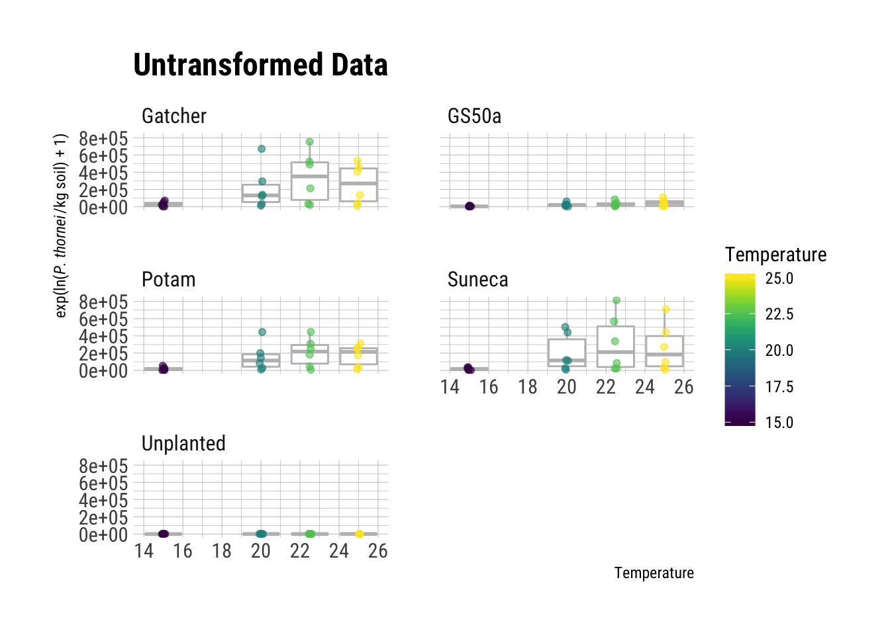
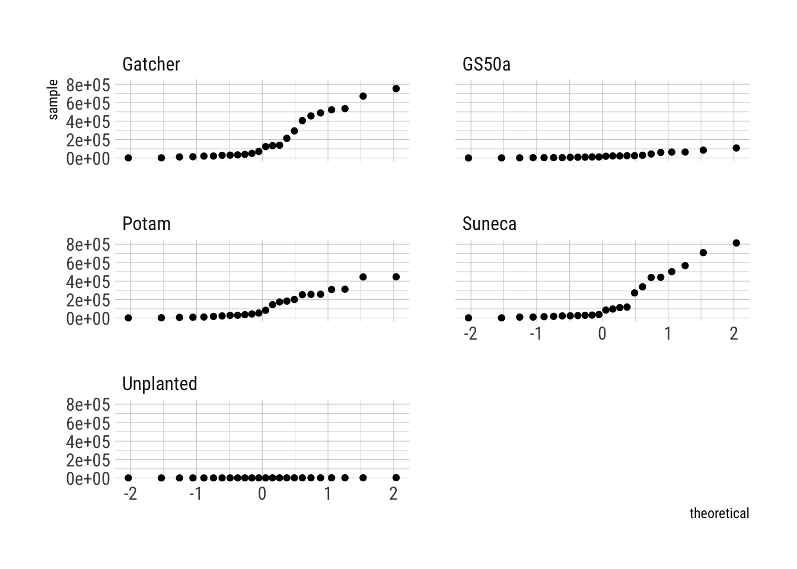
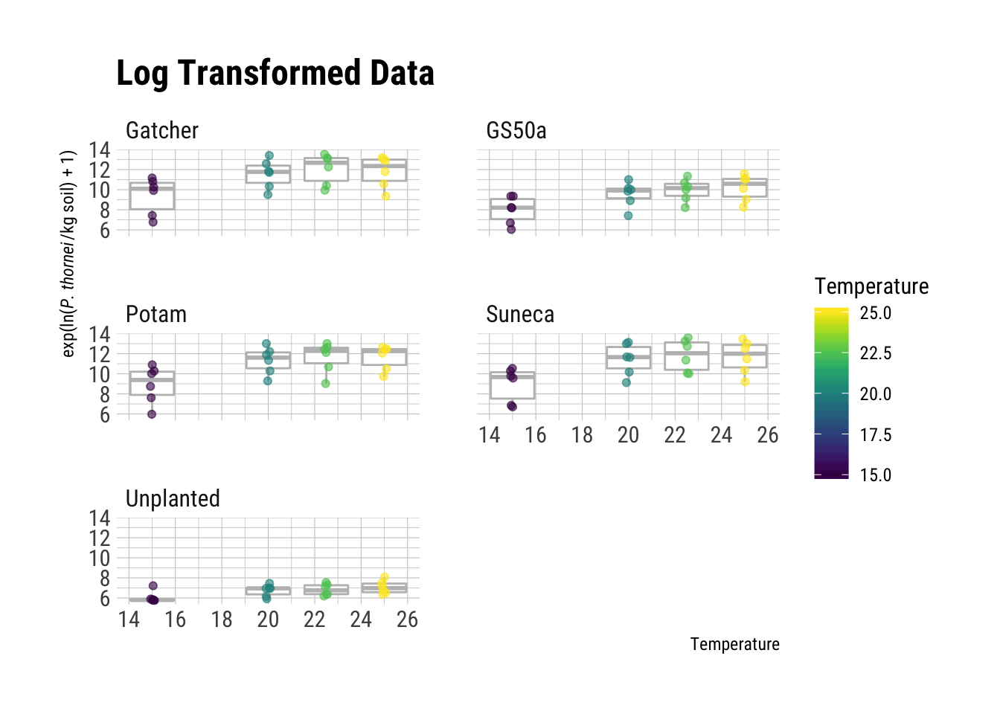
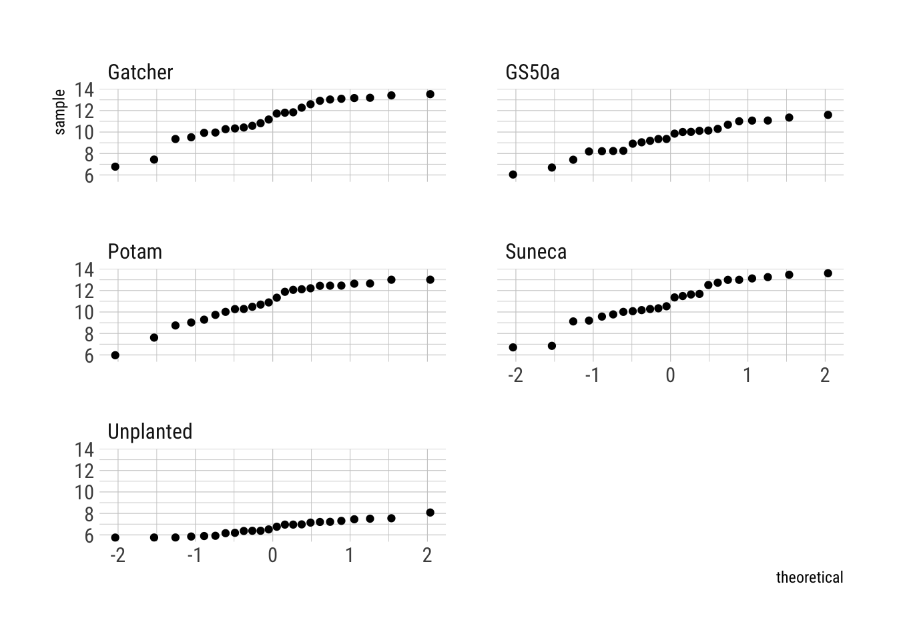
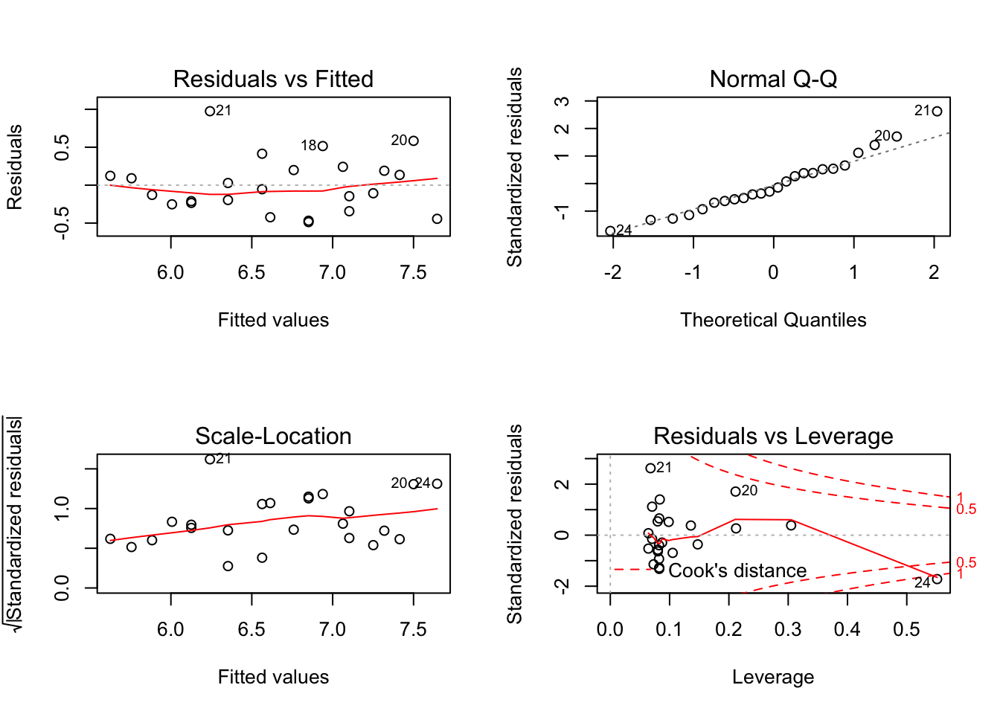
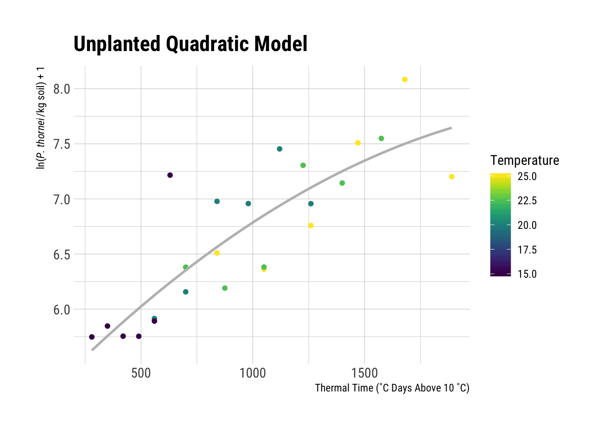

In the paper the the natural log, ln() +1, of the nematode population counts were used to fit the models. Here we will explore a bit further why this was necessary.
{{% alert note %}} A note about using log() + 1 rather than just log(). This is necessary with these data to avoid taking log(0). Try it in R to see what happens if you are not familiar. {{% /alert %}}
First, plot the data for each of the four temperatures and the four varieties, plus the unplanted control converting from the natural log value back to the original actual count values to see what the population numbers look like. Note the use of exp() - 1 in the y aesthetic, to transform the values from the ln() + 1 values. Doing this shows us the original data’s values and helps demonstrate why the data were log transformed for analysis. To examine the data, first we will use boxplots and then quantile-quantile (qq) plots.
ggplot(
nema_long,
aes(
x = Temperature,
y = exp(Log_pop) - 1,
group = Temperature,
colour = Temperature
)
) +
geom_boxplot(
colour = "grey",
outlier.color = NA
) +
geom_jitter(
width = 0.1,
alpha = 0.6
) +
ylab(expression(
paste(
"exp(ln(",
italic("P. thornei"),
"/kg soil) + 1)"
),
sep = ""
)) +
facet_wrap(
~ Variety,
ncol = 2
) +
scale_colour_viridis("Temperature") +
ggtitle("Untransformed Data")
ggplot(
nema_long,
aes(sample = exp(Log_pop) - 1)
) +
stat_qq() +
facet_wrap(
~ Variety,
ncol = 2
)
The boxplots show that there is a wide range of values with the 25 ˚C temperature populations close to zero with others having quite large ranges, this could indicate heteroscedasticity.
Also, looking at the qq-plots it is apparent that the original data do not meet the assumptions of normally distributed errors for a linear model. See the Further Reading section for suggested reading on interpreting qq-plots.
ggplot(
nema_long,
aes(
x = Temperature,
y = Log_pop,
group = Temperature,
colour = Temperature
)
) +
geom_boxplot(
colour = "grey",
outlier.color = NA
) +
geom_jitter(
width = 0.1,
alpha = 0.6
) +
ylab(expression(
paste(
"exp(ln(",
italic("P. thornei"),
"/kg soil) + 1)"
),
sep = ""
)) +
facet_wrap(
~ Variety,
ncol = 2
) +
scale_colour_viridis("Temperature") +
ggtitle("Log Transformed Data")
ggplot(
nema_long,
aes(sample = Log_pop)
) +
stat_qq() +
facet_wrap(
~ Variety,
ncol = 2
)
Here we see that the log() transformed data’s boxplots show fewer outliers and tighter range of values. The qq-plots also indicate that it is possible to conduct a linear regression with these data.
Even though the original paper used a linear model for the unplanted data, a polynomial model also fits these data quite well. We can compare the original linear model from the paper with a polynomial model quite easily in R to see how the models compare using AIC (Akaike information criterion). AIC is used to measure the models’ relative quality to each other.
Since the unplanted_model object already exists as a product of the linear model, we simply need to use the polynomial model with the unplanted data to create a new object to compare them.
unplanted_poly_model <- nema_long %>%
filter(Variety == "Unplanted") %>%
quadratic_model()
par(mfrow = c(2, 2))
plot(unplanted_poly_model)
summary(unplanted_poly_model)##
## Call:
## lm(formula = Log_pop ~ Degree_days + I(Degree_days^2), data = df)
##
## Residuals:
## Min 1Q Median 3Q Max
## -0.48697 -0.23865 -0.08038 0.19211 0.97466
##
## Coefficients:
## Estimate Std. Error t value Pr(>|t|)
## (Intercept) 5.062e+00 4.031e-01 12.556 3.14e-11 ***
## Degree_days 2.125e-03 8.511e-04 2.497 0.0209 *
## I(Degree_days^2) -4.010e-07 4.016e-07 -0.999 0.3293
## ---
## Signif. codes: 0 '***' 0.001 '**' 0.01 '*' 0.05 '.' 0.1 ' ' 1
##
## Residual standard error: 0.3848 on 21 degrees of freedom
## Multiple R-squared: 0.7101, Adjusted R-squared: 0.6825
## F-statistic: 25.72 on 2 and 21 DF, p-value: 2.255e-06By this information, the \(R^2\) value is a bit better from the unplanted_poly_model, 0.7101253, than the original unplanted_model’s, 0.6963592. Using the same code from above it is easy to visualise the new model’s fit using ggplot2.
nema_long %>%
group_by(Variety) %>%
filter(Variety == "Unplanted") %>%
ggplot(aes(
x = Degree_days,
y = Log_pop,
colour = Temperature,
)) +
geom_point() +
geom_smooth(
method = "lm",
formula = y ~ x + I(x ^ 2),
size = 1,
se = FALSE,
colour = "grey",
alpha = 0.5
) +
ylab(expression(
paste(
"ln(",
italic("P. thornei"),
"/kg soil) + 1"
),
sep = ""
)) +
xlab("Thermal Time (˚C Days Above 10 ˚C)") +
scale_colour_viridis("Temperature") +
ggtitle("Unplanted Quadratic Model")
Checking the model fit visually, we can see that it fits the data nicely. To get a better feel for how these models compare, AIC can be used to determine the relative quality of a model for a given set of data. That is, you cannot compare models for other data using AIC.
Checking the AIC is quite simple in R, just AIC(). Here we check the AIC of the original linear unplanted_model and the new unplanted_poly_model.
AIC(unplanted_model)## [1] 26.17149AIC(unplanted_poly_model)## [1] 27.05797Ideally when fitting models, you look for the least complex model that provides the best explanation of the variation in the data. In this case the original linear model has a lower AIC, 26.1714857, than that of the polynomial model, 27.0579669, but they are extremely close and the \(R^2\) value of the polynomial model, 0.7101253, is a bit better than the linear model’s \(R^2\), 0.6963592, as well. Therefore, without more data to distinguish the models it appears that either model suffices for the data provided.
Wickham (2014) introduced the idea of tidy data for analysis. As you work with raw data from many sources, it is useful to understand what this means and why it is useful. In this example, tidyr was used to convert the data from wide to long format. For a more in-depth look at using tidyr see:
The University of Georgia has a nice, easy to understand set of materials that demonstrate how to interpret diagnostic plot outputs from plot(lm.object), Regression diagnostic plots on their Data Analysis in the Geosciences page. For even more, this Cross Validated question has an excellent discussion on Interpreting plot.lm().
The University of Montana provides an on-line text, “Statistics With R”, that includes a section on ANOVA model diagnostics including QQ-plots. Since ANOVA uses lm() in R, the tools and descriptions here are applicable to the qq-plots we have generated here in this illustration.
For a detailed look at how to interpret the output from summary() for linear models, see The YHAT Blog post, Fitting & Interpreting Linear Models in R.
Faraway (2002), “Practical Regression and Anova using R” is an excellent free resource that goes into detail about fitting linear models using R and how to interpret the diagnostics. Prof. Faraway has more recent books on the subject as well that you might wish to borrow from your library or purchase, see http://www.maths.bath.ac.uk/~jjf23/LMR/ for more details.
Selecting good colour schemes is essential for communicating your message. The viridis package makes this much easier to do. Bob Rudis has a nice blog post when the package was first introduced that demonstrates why it is useful to use a package like this for your colour palettes, Using the new ‘viridis’ colormap in R (thanks to Simon Garnier). Other colour palettes for R exist as well. Notably the RColorBrewer package provides an easy-to-use interface for the fantastic Colour Brewer palettes http://colorbrewer2.org/ commonly used for cartography but also useful for graphs.
## ─ Session info ──────────────────────────────────────────────────────────
## setting value
## version R version 3.5.3 (2019-03-11)
## os macOS Mojave 10.14.5
## system x86_64, darwin15.6.0
## ui X11
## language (EN)
## collate en_US.UTF-8
## ctype en_US.UTF-8
## tz America/Sao_Paulo
## date 2019-08-03
##
## ─ Packages ──────────────────────────────────────────────────────────────
## package * version date lib source
## assertthat 0.2.1 2019-03-21 [1] CRAN (R 3.5.2)
## backports 1.1.3 2018-12-14 [1] CRAN (R 3.5.0)
## broom 0.5.2 2019-04-07 [1] CRAN (R 3.5.2)
## callr 3.1.1 2018-12-21 [1] CRAN (R 3.5.0)
## cellranger 1.1.0 2016-07-27 [1] CRAN (R 3.5.0)
## cli 1.1.0 2019-03-19 [1] CRAN (R 3.5.2)
## colorspace 1.4-1 2019-03-18 [1] CRAN (R 3.5.2)
## crayon 1.3.4 2017-09-16 [1] CRAN (R 3.5.0)
## desc 1.2.0 2018-05-01 [1] CRAN (R 3.5.0)
## devtools 2.0.1 2018-10-26 [1] CRAN (R 3.5.1)
## digest 0.6.18 2018-10-10 [1] CRAN (R 3.5.0)
## dplyr * 0.8.0.1 2019-02-15 [1] CRAN (R 3.5.2)
## evaluate 0.13 2019-02-12 [1] CRAN (R 3.5.2)
## extrafont 0.17 2014-12-08 [1] CRAN (R 3.5.0)
## extrafontdb 1.0 2012-06-11 [1] CRAN (R 3.5.0)
## forcats * 0.3.0 2018-02-19 [1] CRAN (R 3.5.0)
## fs 1.2.6 2018-08-23 [1] CRAN (R 3.5.0)
## generics 0.0.2 2018-11-29 [1] CRAN (R 3.5.0)
## ggplot2 * 3.1.1 2019-04-07 [1] CRAN (R 3.5.2)
## glue 1.3.1 2019-03-12 [1] CRAN (R 3.5.2)
## gridExtra 2.3 2017-09-09 [1] CRAN (R 3.5.0)
## gtable 0.3.0 2019-03-25 [1] CRAN (R 3.5.2)
## haven 2.0.0 2018-11-22 [1] CRAN (R 3.5.0)
## hms 0.4.2 2018-03-10 [1] CRAN (R 3.5.0)
## hrbrthemes * 0.5.0.1 2018-08-19 [1] CRAN (R 3.5.0)
## htmltools 0.3.6 2017-04-28 [1] CRAN (R 3.5.0)
## httr 1.4.0 2018-12-11 [1] CRAN (R 3.5.0)
## jsonlite 1.6 2018-12-07 [1] CRAN (R 3.5.0)
## kableExtra * 0.9.0 2018-05-21 [1] CRAN (R 3.5.0)
## knitr 1.22 2019-03-08 [1] CRAN (R 3.5.2)
## labeling 0.3 2014-08-23 [1] CRAN (R 3.5.0)
## lattice 0.20-38 2018-11-04 [1] CRAN (R 3.5.3)
## lazyeval 0.2.2 2019-05-05 [1] Github (hadley/lazyeval@c336765)
## lubridate 1.7.4 2018-04-11 [1] CRAN (R 3.5.0)
## magrittr 1.5 2014-11-22 [1] CRAN (R 3.5.0)
## memoise 1.1.0 2017-04-21 [1] CRAN (R 3.5.0)
## modelr 0.1.2 2018-05-11 [1] CRAN (R 3.5.0)
## munsell 0.5.0 2018-06-12 [1] CRAN (R 3.5.0)
## nlme 3.1-137 2018-04-07 [1] CRAN (R 3.5.3)
## pillar 1.3.1 2018-12-15 [1] CRAN (R 3.5.0)
## pkgbuild 1.0.2 2018-10-16 [1] CRAN (R 3.5.0)
## pkgconfig 2.0.2 2018-08-16 [1] CRAN (R 3.5.0)
## pkgload 1.0.2 2018-10-29 [1] CRAN (R 3.5.0)
## plyr 1.8.4 2016-06-08 [1] CRAN (R 3.5.0)
## prettyunits 1.0.2 2015-07-13 [1] CRAN (R 3.5.0)
## processx 3.3.0 2019-03-10 [1] CRAN (R 3.5.2)
## ps 1.3.0 2018-12-21 [1] CRAN (R 3.5.0)
## purrr * 0.3.2 2019-03-15 [1] CRAN (R 3.5.2)
## R6 2.4.0 2019-02-14 [1] CRAN (R 3.5.2)
## Rcpp 1.0.1 2019-03-17 [1] CRAN (R 3.5.2)
## readr * 1.3.1 2018-12-21 [1] CRAN (R 3.5.0)
## readxl 1.1.0 2018-04-20 [1] CRAN (R 3.5.0)
## remotes 2.0.2 2018-10-30 [1] CRAN (R 3.5.0)
## rlang 0.3.4 2019-04-07 [1] CRAN (R 3.5.2)
## rmarkdown 1.12 2019-03-14 [1] CRAN (R 3.5.2)
## rprojroot 1.3-2 2018-01-03 [1] CRAN (R 3.5.0)
## rstudioapi 0.10 2019-03-19 [1] CRAN (R 3.5.1)
## Rttf2pt1 1.3.7 2018-06-29 [1] CRAN (R 3.5.0)
## rvest 0.3.2 2016-06-17 [1] CRAN (R 3.5.0)
## scales 1.0.0 2018-08-09 [1] CRAN (R 3.5.0)
## sessioninfo 1.1.1 2018-11-05 [1] CRAN (R 3.5.0)
## stringi 1.4.3 2019-03-12 [1] CRAN (R 3.5.2)
## stringr * 1.4.0 2019-02-10 [1] CRAN (R 3.5.2)
## testthat 2.0.1 2018-10-13 [1] CRAN (R 3.5.0)
## tibble * 2.1.1 2019-03-16 [1] CRAN (R 3.5.2)
## tidyr * 0.8.3 2019-03-01 [1] CRAN (R 3.5.2)
## tidyselect 0.2.5 2018-10-11 [1] CRAN (R 3.5.0)
## tidyverse * 1.2.1 2017-11-14 [1] CRAN (R 3.5.0)
## usethis 1.4.0 2018-08-14 [1] CRAN (R 3.5.0)
## viridis * 0.5.1 2018-03-29 [1] CRAN (R 3.5.0)
## viridisLite * 0.3.0 2018-02-01 [1] CRAN (R 3.5.0)
## withr 2.1.2 2018-03-15 [1] CRAN (R 3.5.0)
## xfun 0.6 2019-04-02 [1] CRAN (R 3.5.2)
## xml2 1.2.0 2018-01-24 [1] CRAN (R 3.5.0)
## yaml 2.2.0 2018-07-25 [1] CRAN (R 3.5.0)
##
## [1] /Library/Frameworks/R.framework/Versions/3.5/Resources/libraryFaraway, Julian J. 2002. Practical Regression and Anova using R. [University of Bath]. https://cran.r-project.org/doc/contrib/Faraway-PRA.pdf.
Wickham, Hadley. 2014. “Tidy Data.” The Journal of Statistical Software 59 (10). http://www.jstatsoft.org/v59/i10/.